Unciv个人游玩经验分享
Table of Contents
1. 要将工作重心转移到经济建设上
我在玩王子难度时，总想要像军阀难度一样平推其他文明，拿到征服胜利。但是，王子难度的文明的强大已经远超过军阀，打倒一个文明需要相当长的时间，甚至可能会被反推。所以在相当长的时间里我想的都是疯狂爆兵，城市的产能拉满，用数量抵挡科技上的落后。不过这相当无用，毕竟低技术的兵种战斗力低的不行。
1.1. 王子德意志vs波斯，劣势反推
举个例子，我在玩一局德意志王子局时，与波斯文明共分大陆，整个地图上只剩下2/4个文明和2个城邦。本来我认定要输定了，因为我只有大陆10%左右的领土，根本爆不了多少兵，而且产能少，波斯科技比我强（至少在我之前搞出了原子弹），两个城邦都是他的盟友。
然而，就是在这种“绝对劣势”下，我迫不得已尝试将所有的城市的关注点放在金钱产出下。本来以为这是我绝望的挣扎，结果这种“改革开放”成为了破局的关键。
由于我是个临海国家，且拥有广袤的海洋地块领土，所以说临海城市的金钱产出不会差到哪里去。在经济调整后，我每回合增加的钱数迅速增加，超过了 200块/回合 的速度。于是，我开始以平均每回合买一座波斯城市的速度购买波斯的城市，一般会要求我给予200后波斯再提出附加要求（只要不是扣太多的钱，奢侈品没有问题）。在拿下了波斯的产钱大城（沿海的）后，钱的增长速度也迅速增加，达到了 1000块/回合 的增长速率。这时，波斯的建好的联合国要求投票了。
实际上我并不理解AI所做出的决策。理论上波斯可以选择直接平推，或者飞天（都飞一半了）再或者文化胜利。但事实上，波斯的决策是：联合国。看到消息提示栏里面“联合国已经在波斯建成”的消息，我近乎欣喜若狂。而到了投票的时刻，我先莽进去。然后发现，波斯的两个城邦起到了非常关键的作用——毫无悬念地，波斯外加胜利。于是，我迅速回档，在前2 个回合用我近乎所有的钱拉到了一个城邦。于是，平手，等待下一回合。而到了下一个投票的时候，我又用同样的套路将另外一个城邦给拿下了。至此，我，德意志，外交胜利。
不过这还不够爽。既然一开始就制定了平推的目标，就一定要办到。于是我继续将波斯剩余的城市逐一买下，现在，他只剩首都了。而我，由于长期的种田，我也拥有了核导弹。于是，找到附近的一个城市，购买核导弹直至上限。然后，Fire!开火！核导弹迅速抹平了它本土内部的所有单位，我陈列在边境的兵力也迅速推进，在短短的三个回合之内，波斯帝国灭亡。尽管它在海外，地图的南方拥有巨量的单位，并且尝试在南方进行登录作战，但仍旧是杯水车薪（如果文明灭亡后，残余部队变成蛮族部队或者抵抗者部队，游戏可能就难打许多了）。
1.2. 科技为王，经济为辅
最近我又开了新的德意志王子局。而在这一局游戏里，我一开始仍旧将关注点放在产能上，但同上，军队维持得非常勉强，科技也比较落后。中途曾经买宣过几个文明，但都拖不住。尽管在前期通过与一个文明宣战 (141) ，
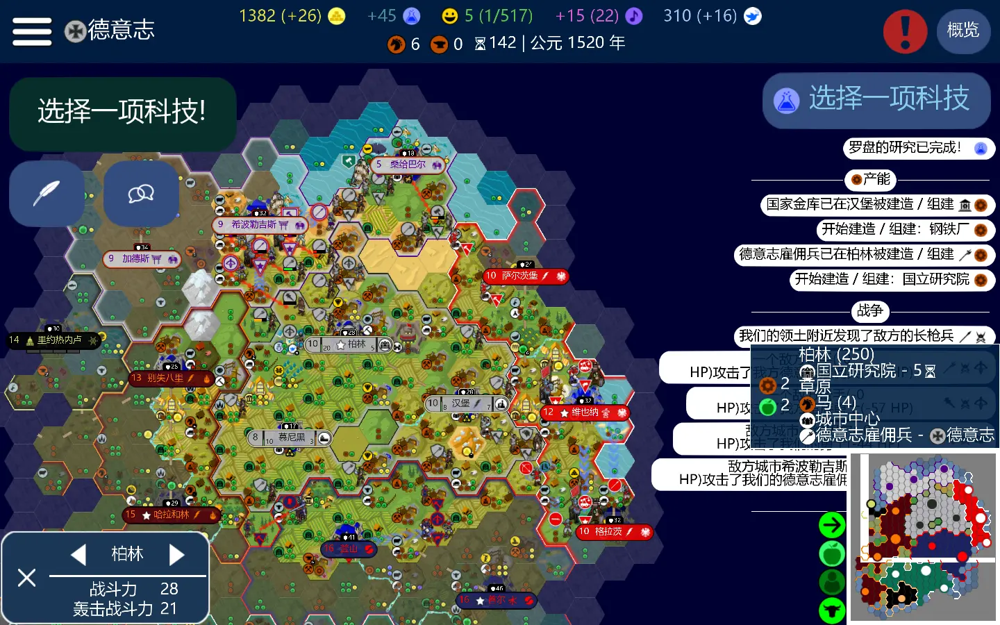
Figure 1: 第142回合的版图
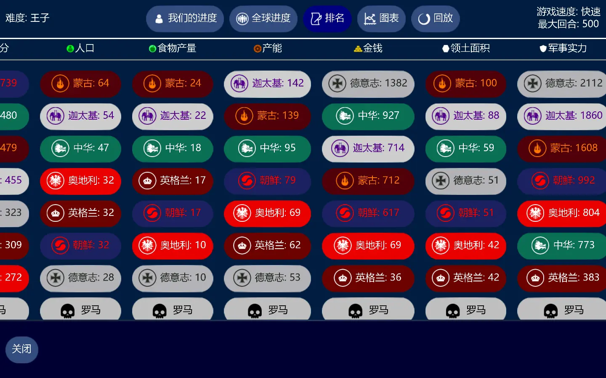
Figure 2: 第142回合的数据
然后让他割沿海城市议和从而获得了两个沿海城市 (156) ，才摆脱了内陆国的枷锁。
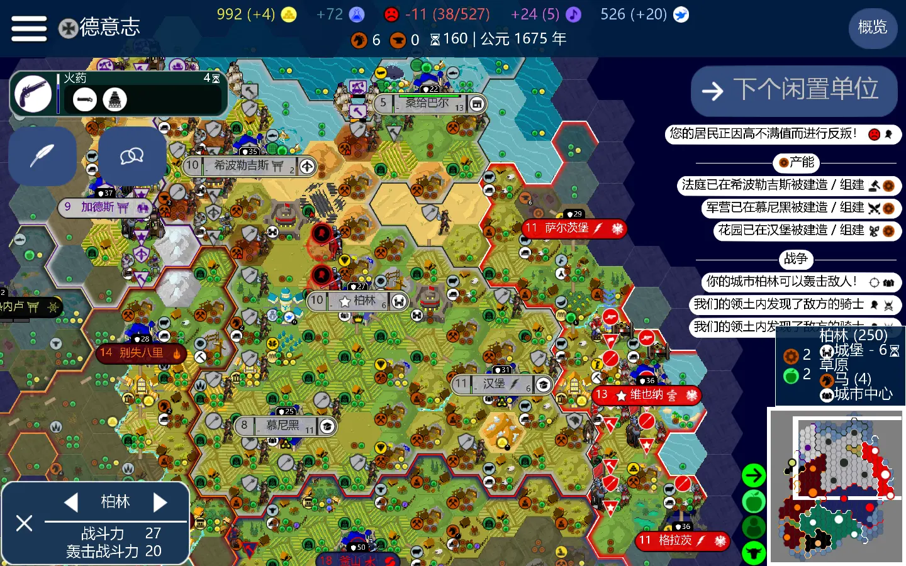
Figure 3: 第160回合的版图
在取得这一系列的成就后，就陷入了长期的军备竞赛中。直到 192 回合，我购买了奥地利的一座沿海城市，同时，城市的兴趣点点在了科技中。于是，科技开始迅速增长。
Figure 4: 第212回合的科技增长表
在发展了一段时间后，我直接将科技的目标点在了“高等弹道学”——即研究原子弹和核导弹。科技增速也从 +80/回合 来到了 +300/回合 ，而在 220 时，我购买了蒙古——一个新兴的强盛文明的城市，开始向西扩张，限制蒙古的实力。
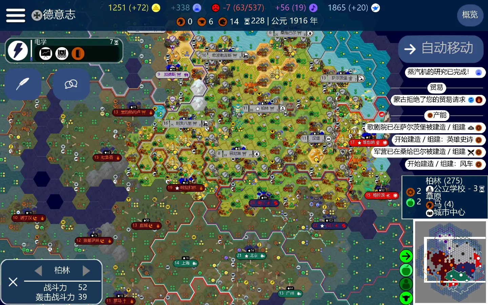
Figure 5: 第228回合的版图
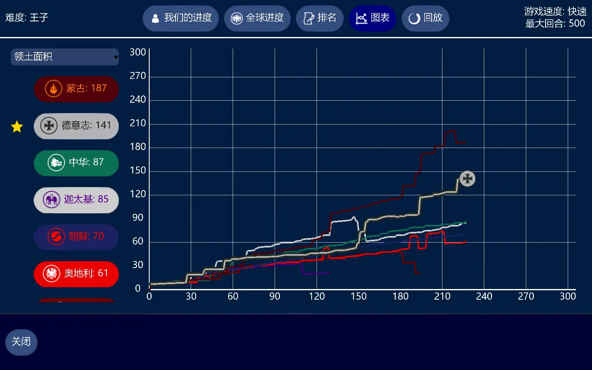
Figure 6: 第228回合的领土面积表
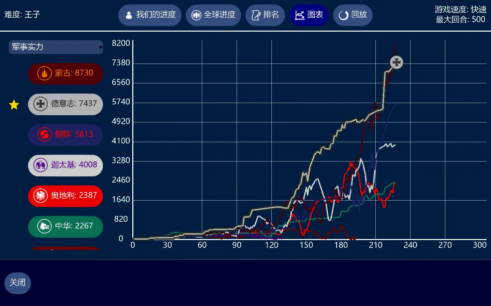
Figure 7: 第228回合的军事实力表
往下的很多内容，图示即可，基本上都是运营发展，没有宣战或者其他的。
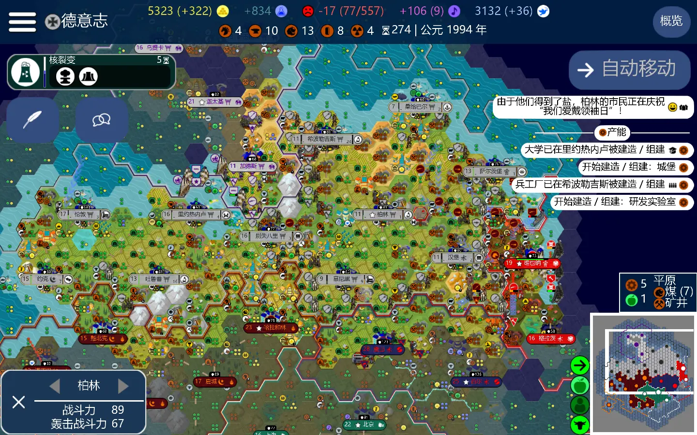
Figure 8: 第274回合的版图
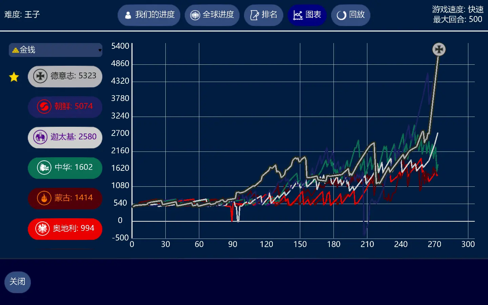
Figure 9: 第274回合的金钱
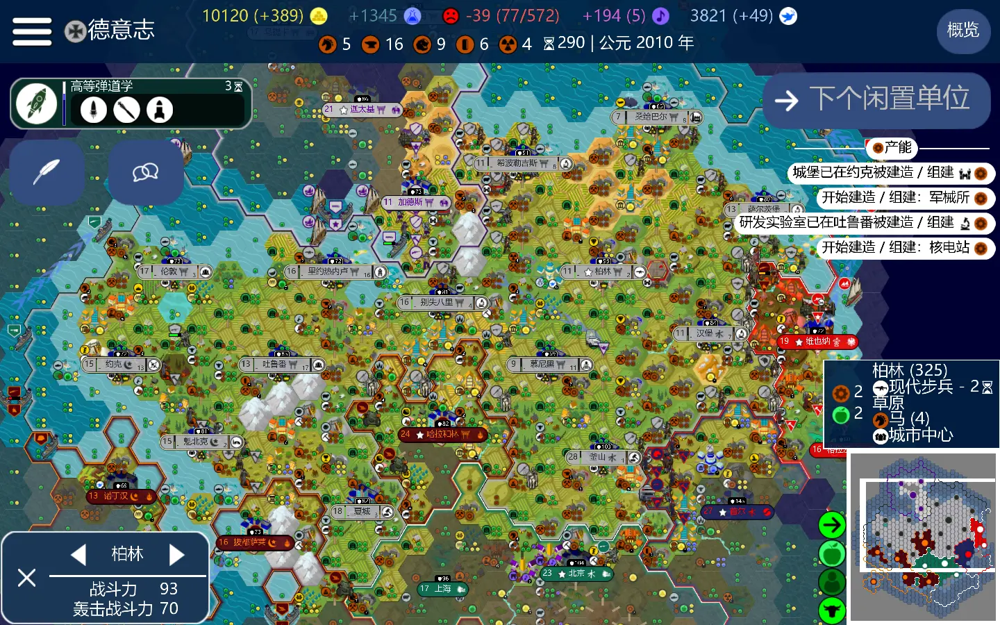
Figure 10: 第290回合的版图
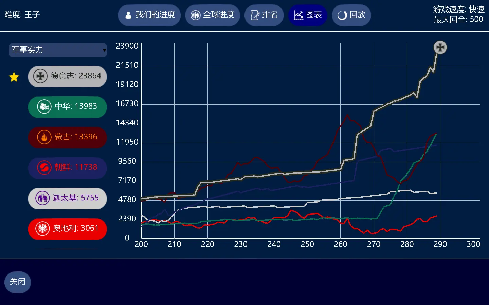
Figure 11: 第290回合的军事实力
至此，科技与金钱的全面反超顺利完成。接下来的事情，就是买城了。
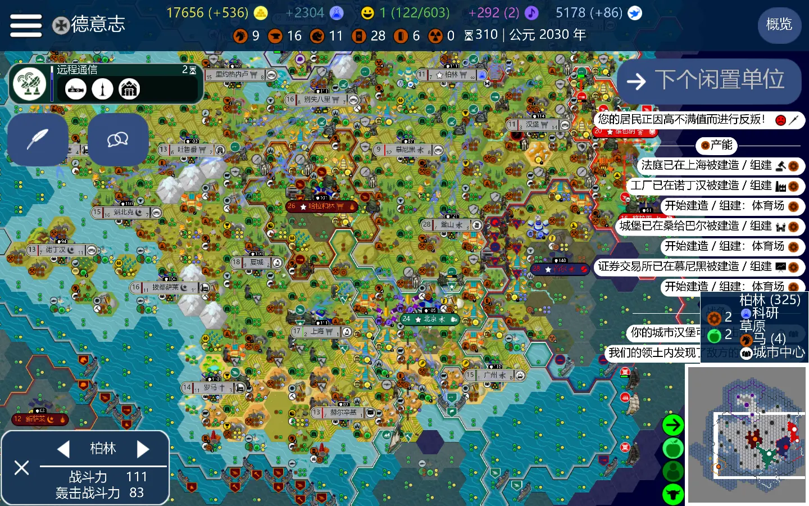
Figure 12: 第310回合的版图
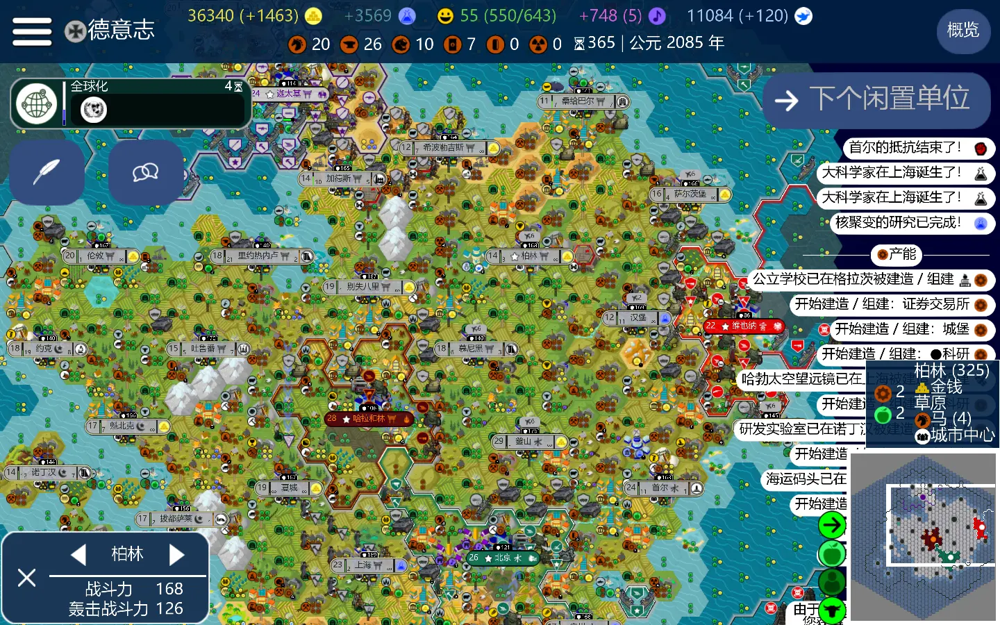
Figure 13: 第365回合的版图
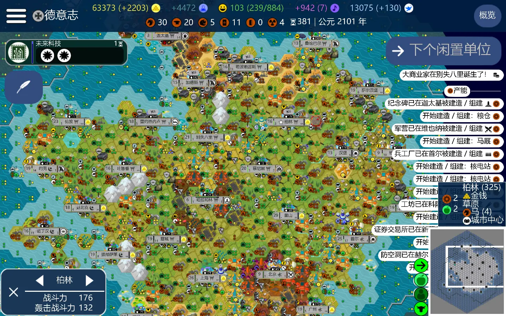
Figure 14: 第381回合的版图
在科技点满后，我立刻将工作重心全部转移到金钱产出上，提高买城速度，并在 341 回合时发动了战争，先后吞并所有的文明，因为只有单城市以及核导弹的影响，所以吞并非常简单快速。
不过最后这一段的可玩性还是挺强的，可以整一个科技胜利，也可以整一个外交胜利，如果操作得当，文化胜利也不是并非不行，再熬上200回合，整个时间胜利也并非不可行。